CC(C)=C1CC[C@@H](C)CC1=OMain Schemes2-4 and SI preparative network, including SI1-SI4 intermediates and experimentally obtained early-study branches. Failed projected compounds10-14 are excluded as products. Known reagent preparations are literature boundaries. Absolute series follows source wedge drawings; unmarked carbinol and wavy beta-ketoester centres remain unspecified. Facts compiled deterministically; independent review pending.
完整 JSON · 逐步 CSV · 路线序列 · SDF · HRMS 核对
| 事件 | 分子连接 | 报告产率 | Canonical reaction SMILES |
|---|---|---|---|
| E01 | pulegone + prenyl-Br → 4 | 4: 90% | CC(C)=C1CC[C@@H](C)CC1=O.CC(C)=CCBr>>CC(C)=CC[C@@H]1C(=O)C(=C(C)C)CC[C@H]1C |
| E02 | 4 + vinylMgBr → 5 | 5: 81% | CC(C)=CC[C@@H]1C(=O)C(=C(C)C)CC[C@H]1C.[Br-].[CH-]=C.[Mg+2]>>C=CC1(O)C(=C(C)C)CC[C@@H](C)[C@@H]1CC=C(C)C |
| E03 | 5 → 3 | 3: 61% | C=CC1(O)C(=C(C)C)CC[C@@H](C)[C@@H]1CC=C(C)C>>CC(C)=CC[C@@H]1C2=C(CC[C@H]1C)C(C)(C)CC2=O |
| E04 | 3 + allyl-chloroformate + iodopropyl-OBn → 19 | 19: 78% | C=CCOC(=O)Cl.CC(C)=CC[C@@H]1C2=C(CC[C@H]1C)C(C)(C)CC2=O.ICCCOCc1ccccc1>>C=CCOC(=O)C1(CCCOCc2ccccc2)C(=O)C2=C(CC[C@@H](C)[C@@H]2CC=C(C)C)C1(C)C |
| E05 | 19 → 20 | 20: 92% | C=CCOC(=O)C1(CCCOCc2ccccc2)C(=O)C2=C(CC[C@@H](C)[C@@H]2CC=C(C)C)C1(C)C>>C=CC[C@]1(CCCOCc2ccccc2)C(=O)C2=C(CC[C@@H](C)[C@@H]2CC=C(C)C)C1(C)C |
| E06 | 20 → 21 | 21: 72% | C=CC[C@]1(CCCOCc2ccccc2)C(=O)C2=C(CC[C@@H](C)[C@@H]2CC=C(C)C)C1(C)C>>C=CC[C@]1(CCCO)C(=O)[C@H]2[C@@H](CC=C(C)C)[C@H](C)CC[C@@H]2C1(C)C |
| E07 | 21 → 2 | 2: 74% | C=CC[C@]1(CCCO)C(=O)[C@H]2[C@@H](CC=C(C)C)[C@H](C)CC[C@@H]2C1(C)C>>C=CC[C@]1(CCC=O)C(=O)[C@H]2[C@@H](CC=C(C)C)[C@H](C)CC[C@@H]2C1(C)C |
| E08 | 2 → 22 | 22: 74% | C=CC[C@]1(CCC=O)C(=O)[C@H]2[C@@H](CC=C(C)C)[C@H](C)CC[C@@H]2C1(C)C>>C=CC[C@]12CC[C@H](O)[C@@]1(O)[C@H]1[C@@H](CC=C(C)C)[C@H](C)CC[C@@H]1C2(C)C |
| E09 | 22 → SI-1 | SI-1: 89% | C=CC[C@]12CC[C@H](O)[C@@]1(O)[C@H]1[C@@H](CC=C(C)C)[C@H](C)CC[C@@H]1C2(C)C>>C=CC[C@]12CC[C@H](O[Si](CC)(CC)CC)[C@@]1(O)[C@H]1[C@@H](CC=C(C)C)[C@H](C)CC[C@@H]1C2(C)C |
| E10 | SI-1 → SI-2 | SI-2: 74% | C=CC[C@]12CC[C@H](O[Si](CC)(CC)CC)[C@@]1(O)[C@H]1[C@@H](CC=C(C)C)[C@H](C)CC[C@@H]1C2(C)C>>C=CC[C@]12CC[C@H](O[Si](CC)(CC)CC)C1=C1[C@@H](CC=C(C)C)[C@H](C)CC[C@@H]1C2(C)C |
| E11 | SI-2 → 23 | 23: 72% | C=CC[C@]12CC[C@H](O[Si](CC)(CC)CC)C1=C1[C@@H](CC=C(C)C)[C@H](C)CC[C@@H]1C2(C)C>>C=CC[C@]12CCC(=O)C1=C1[C@@H](CC=C(C)C)[C@H](C)CC[C@@H]1C2(C)C |
| E12 | 23 → 24 | 24: 59% | C=CC[C@]12CCC(=O)C1=C1[C@@H](CC=C(C)C)[C@H](C)CC[C@@H]1C2(C)C>>C=CC[C@]12CCC(=O)[C@H]1[C@@H]1[C@@H](CC=C(C)C)[C@H](C)CC[C@@H]1C2(C)C |
| E13 | 24 → 26 | not reported | C=CC[C@]12CCC(=O)[C@H]1[C@@H]1[C@@H](CC=C(C)C)[C@H](C)CC[C@@H]1C2(C)C>>C=CC[C@]12C[C@@H](O)C(=O)[C@H]1[C@@H]1[C@@H](CC=C(C)C)[C@H](C)CC[C@@H]1C2(C)C |
| E14 | 26 → 27 | not reported | C=CC[C@]12C[C@@H](O)C(=O)[C@H]1[C@@H]1[C@@H](CC=C(C)C)[C@H](C)CC[C@@H]1C2(C)C>>C=CC[C@]1(CC=O)[C@@H](C(=O)OC)[C@@H]2[C@@H](CC=C(C)C)[C@H](C)CC[C@@H]2C1(C)C |
| E15 | 27 → 28 | 28: 62% | C=CC[C@]1(CC=O)[C@@H](C(=O)OC)[C@@H]2[C@@H](CC=C(C)C)[C@H](C)CC[C@@H]2C1(C)C>>C=CC[C@]1(C)[C@@H](C(=O)OC)[C@@H]2[C@@H](CC=C(C)C)[C@H](C)CC[C@@H]2C1(C)C |
| E16 | 28 → 29 | 29: 73% | C=CC[C@]1(C)[C@@H](C(=O)OC)[C@@H]2[C@@H](CC=C(C)C)[C@H](C)CC[C@@H]2C1(C)C>>C=CC[C@]1(C)[C@@H](CO)[C@@H]2[C@@H](CC=C(C)C)[C@H](C)CC[C@@H]2C1(C)C |
| E17 | 29 + TMS-diazomethane → SI-3 | SI-3: 63% | C=CC[C@]1(C)[C@@H](CO)[C@@H]2[C@@H](CC=C(C)C)[C@H](C)CC[C@@H]2C1(C)C.C[Si](C)(C)C=[N+]=[N-]>>C#C[C@H]1[C@@H]2[C@@H](CC=C(C)C)[C@H](C)CC[C@@H]2C(C)(C)[C@]1(C)CC=C |
| E18 | SI-3 + MeI → 1 | 1: 98% | C#C[C@H]1[C@@H]2[C@@H](CC=C(C)C)[C@H](C)CC[C@@H]2C(C)(C)[C@]1(C)CC=C.CI>>C=CC[C@]1(C)[C@@H](C#CC)[C@@H]2[C@@H](CC=C(C)C)[C@H](C)CC[C@@H]2C1(C)C |
| E19 | 1 → 30 | 30: 81% | C=CC[C@]1(C)[C@@H](C#CC)[C@@H]2[C@@H](CC=C(C)C)[C@H](C)CC[C@@H]2C1(C)C>>CC1=CC[C@@H]2[C@@H]3[C@H](CC[C@H]2C)C(C)(C)[C@]2(C)CC=C1[C@@H]32 |
| E20 | 30 → Venezuelaene-A | Venezuelaene-A: 58% | CC1=CC[C@@H]2[C@@H]3[C@H](CC[C@H]2C)C(C)(C)[C@]2(C)CC=C1[C@@H]32>>CC1=C2CC[C@]3(C)[C@@H]2[C@@H]2[C@@H](CC1)[C@H](C)CC[C@@H]2C3(C)C |
| A01 | 3 + allyl-chloroformate + MeI → SI-4 | SI-4: 74% | C=CCOC(=O)Cl.CC(C)=CC[C@@H]1C2=C(CC[C@H]1C)C(C)(C)CC2=O.CI>>C=CCOC(=O)C1(C)C(=O)C2=C(CC[C@@H](C)[C@@H]2CC=C(C)C)C1(C)C |
| A02 | SI-4 → 7 | 7: 85% | C=CCOC(=O)C1(C)C(=O)C2=C(CC[C@@H](C)[C@@H]2CC=C(C)C)C1(C)C>>C=CC[C@]1(C)C(=O)C2=C(CC[C@@H](C)[C@@H]2CC=C(C)C)C1(C)C |
| A03 | 7 → 8 | 8: 97% | C=CC[C@]1(C)C(=O)C2=C(CC[C@@H](C)[C@@H]2CC=C(C)C)C1(C)C>>C=CC[C@]1(C)C(=O)[C@H]2[C@@H](CC=C(C)C)[C@H](C)CC[C@@H]2C1(C)C |
| A04 | 8 → 9 | not reported | C=CC[C@]1(C)C(=O)[C@H]2[C@@H](CC=C(C)C)[C@H](C)CC[C@@H]2C1(C)C>>C=CC[C@]1(C)C(=O)[C@@H]2[C@@H](CC=C(C)C)[C@H](C)CC[C@@H]2C1(C)C |
| A05 | 7 + ethoxyethene → 15 | 15: 100% | C=CC[C@]1(C)C(=O)C2=C(CC[C@@H](C)[C@@H]2CC=C(C)C)C1(C)C.C=COCC>>C=CC[C@@]1(C)C(C)(C)C2=C([C@@H](CC=C(C)C)[C@H](C)CC2)C1(O)C(=C)OCC |
| A06 | 15 → 17 | 17: 99% | C=CC[C@@]1(C)C(C)(C)C2=C([C@@H](CC=C(C)C)[C@H](C)CC2)C1(O)C(=C)OCC>>C=CC[C@@]1(C)C(C)(C)C2=C([C@@H](CC=C(C)C)[C@H](C)CC2)C1(O)C(C)=O |
| A07 | 15 → 16 | 16: 92% | C=CC[C@@]1(C)C(C)(C)C2=C([C@@H](CC=C(C)C)[C@H](C)CC2)C1(O)C(=C)OCC>>C=CC[C@]1(C)C(C(C)=O)=C2C(=CC[C@@H](C)[C@@H]2CC=C(C)C)C1(C)C |
| A08 | 17 → 18 | 18: 61% | C=CC[C@@]1(C)C(C)(C)C2=C([C@@H](CC=C(C)C)[C@H](C)CC2)C1(O)C(C)=O>>C=CC[C@]1(C)[C@H](C(C)=O)C2=C(CC[C@@H](C)[C@@H]2CC=C(C)C)C1(C)C |
| A09 | 16 → 18 | 18: 36% | C=CC[C@]1(C)C(C(C)=O)=C2C(=CC[C@@H](C)[C@@H]2CC=C(C)C)C1(C)C>>C=CC[C@]1(C)[C@H](C(C)=O)C2=C(CC[C@@H](C)[C@@H]2CC=C(C)C)C1(C)C |
CC(C)=C1CC[C@@H](C)CC1=O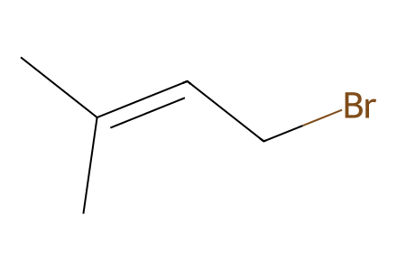
CC(C)=CCBr
[Br-].[CH-]=C.[Mg+2]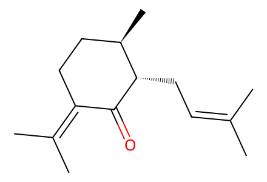
CC(C)=CC[C@@H]1C(=O)C(=C(C)C)CC[C@H]1C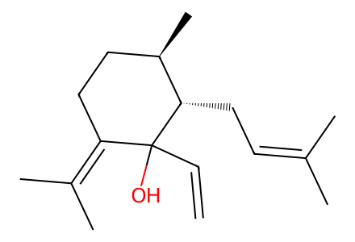
C=CC1(O)C(=C(C)C)CC[C@@H](C)[C@@H]1CC=C(C)C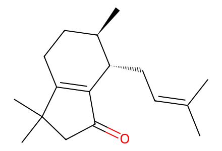
CC(C)=CC[C@@H]1C2=C(CC[C@H]1C)C(C)(C)CC2=O
C=CCOC(=O)Cl
CI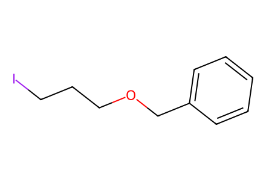
ICCCOCc1ccccc1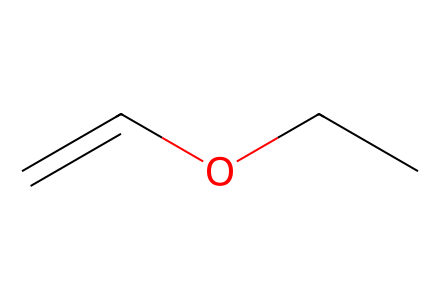
C=COCC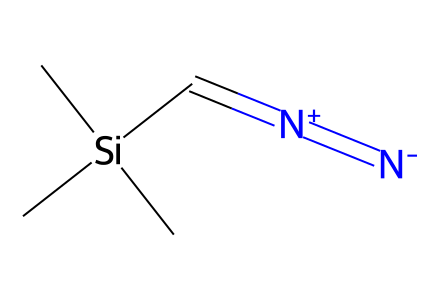
C[Si](C)(C)C=[N+]=[N-]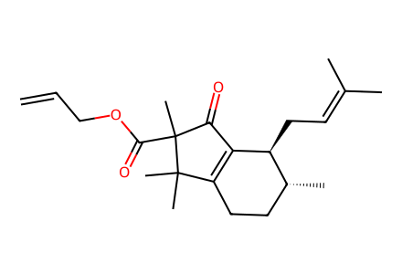
C=CCOC(=O)C1(C)C(=O)C2=C(CC[C@@H](C)[C@@H]2CC=C(C)C)C1(C)C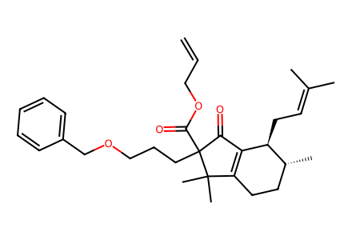
C=CCOC(=O)C1(CCCOCc2ccccc2)C(=O)C2=C(CC[C@@H](C)[C@@H]2CC=C(C)C)C1(C)C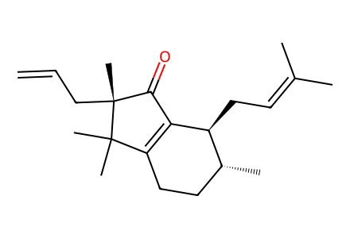
C=CC[C@]1(C)C(=O)C2=C(CC[C@@H](C)[C@@H]2CC=C(C)C)C1(C)C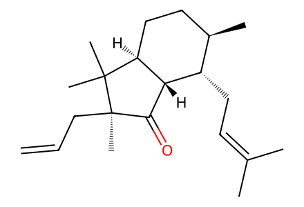
C=CC[C@]1(C)C(=O)[C@H]2[C@@H](CC=C(C)C)[C@H](C)CC[C@@H]2C1(C)C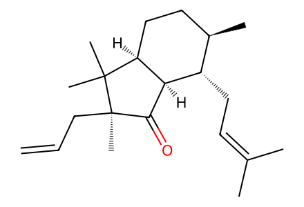
C=CC[C@]1(C)C(=O)[C@@H]2[C@@H](CC=C(C)C)[C@H](C)CC[C@@H]2C1(C)C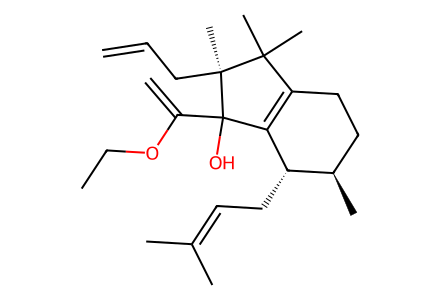
C=CC[C@@]1(C)C(C)(C)C2=C([C@@H](CC=C(C)C)[C@H](C)CC2)C1(O)C(=C)OCC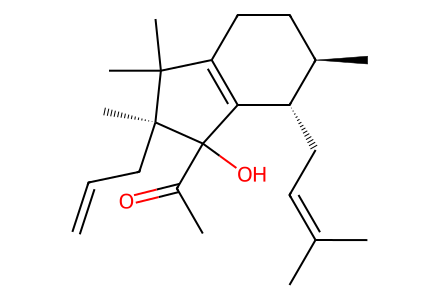
C=CC[C@@]1(C)C(C)(C)C2=C([C@@H](CC=C(C)C)[C@H](C)CC2)C1(O)C(C)=O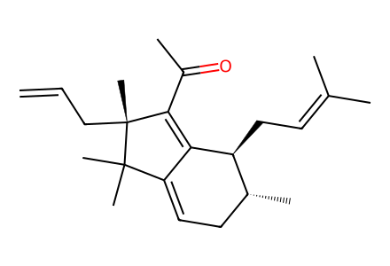
C=CC[C@]1(C)C(C(C)=O)=C2C(=CC[C@@H](C)[C@@H]2CC=C(C)C)C1(C)C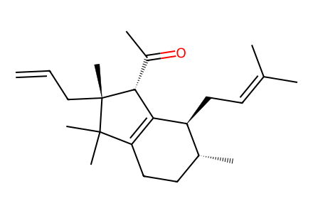
C=CC[C@]1(C)[C@H](C(C)=O)C2=C(CC[C@@H](C)[C@@H]2CC=C(C)C)C1(C)C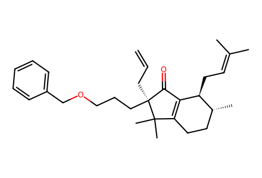
C=CC[C@]1(CCCOCc2ccccc2)C(=O)C2=C(CC[C@@H](C)[C@@H]2CC=C(C)C)C1(C)C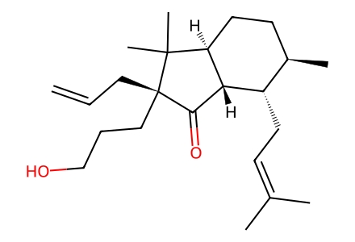
C=CC[C@]1(CCCO)C(=O)[C@H]2[C@@H](CC=C(C)C)[C@H](C)CC[C@@H]2C1(C)C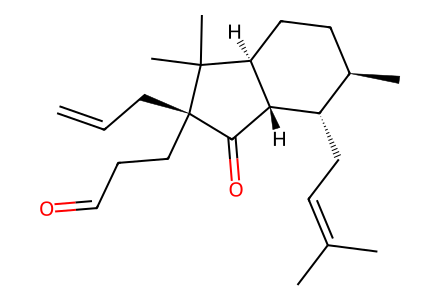
C=CC[C@]1(CCC=O)C(=O)[C@H]2[C@@H](CC=C(C)C)[C@H](C)CC[C@@H]2C1(C)C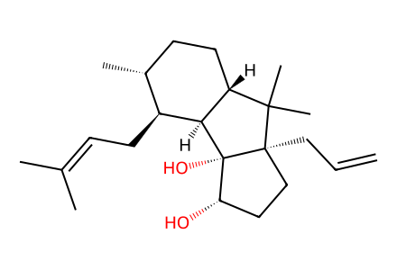
C=CC[C@]12CC[C@H](O)[C@@]1(O)[C@H]1[C@@H](CC=C(C)C)[C@H](C)CC[C@@H]1C2(C)C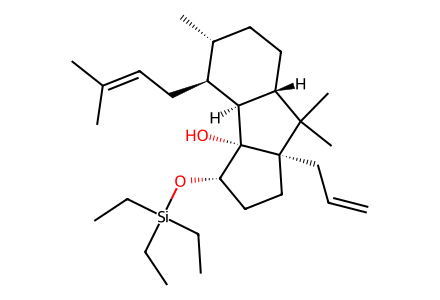
C=CC[C@]12CC[C@H](O[Si](CC)(CC)CC)[C@@]1(O)[C@H]1[C@@H](CC=C(C)C)[C@H](C)CC[C@@H]1C2(C)C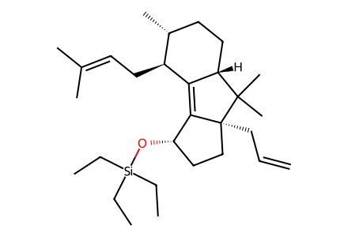
C=CC[C@]12CC[C@H](O[Si](CC)(CC)CC)C1=C1[C@@H](CC=C(C)C)[C@H](C)CC[C@@H]1C2(C)C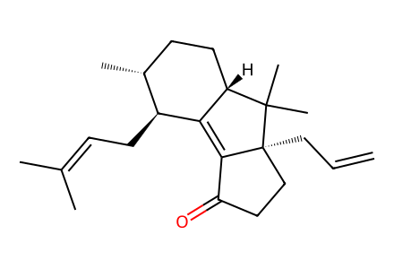
C=CC[C@]12CCC(=O)C1=C1[C@@H](CC=C(C)C)[C@H](C)CC[C@@H]1C2(C)C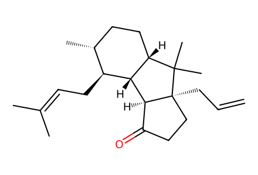
C=CC[C@]12CCC(=O)[C@H]1[C@@H]1[C@@H](CC=C(C)C)[C@H](C)CC[C@@H]1C2(C)C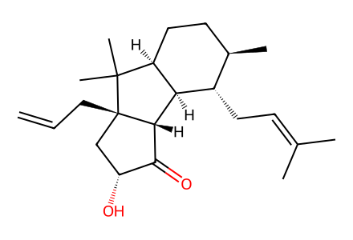
C=CC[C@]12C[C@@H](O)C(=O)[C@H]1[C@@H]1[C@@H](CC=C(C)C)[C@H](C)CC[C@@H]1C2(C)C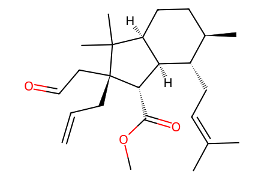
C=CC[C@]1(CC=O)[C@@H](C(=O)OC)[C@@H]2[C@@H](CC=C(C)C)[C@H](C)CC[C@@H]2C1(C)C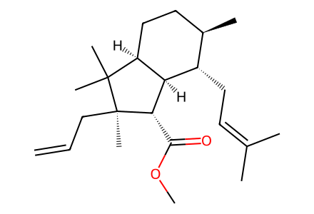
C=CC[C@]1(C)[C@@H](C(=O)OC)[C@@H]2[C@@H](CC=C(C)C)[C@H](C)CC[C@@H]2C1(C)C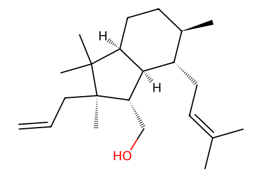
C=CC[C@]1(C)[C@@H](CO)[C@@H]2[C@@H](CC=C(C)C)[C@H](C)CC[C@@H]2C1(C)C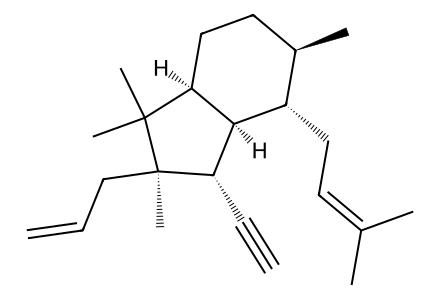
C#C[C@H]1[C@@H]2[C@@H](CC=C(C)C)[C@H](C)CC[C@@H]2C(C)(C)[C@]1(C)CC=C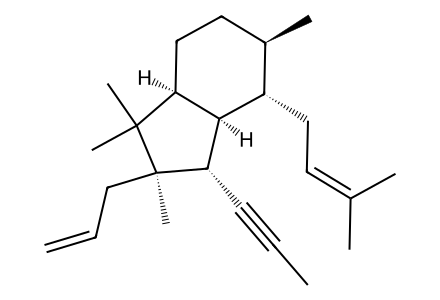
C=CC[C@]1(C)[C@@H](C#CC)[C@@H]2[C@@H](CC=C(C)C)[C@H](C)CC[C@@H]2C1(C)C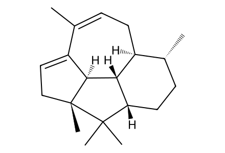
CC1=CC[C@@H]2[C@@H]3[C@H](CC[C@H]2C)C(C)(C)[C@]2(C)CC=C1[C@@H]32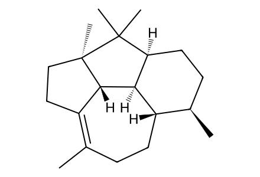
CC1=C2CC[C@]3(C)[C@@H]2[C@@H]2[C@@H](CC1)[C@H](C)CC[C@@H]2C3(C)C